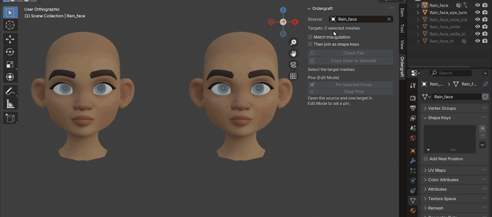

Ordergraft quick start
Installing Ordergraft and your first copy; the full manual, README.md, is in the download. Back to the product page.
Install (Blender 4.2 LTS to 5.3, tested on 4.2.23, 4.5.16, 5.2.4 and 5.3.0)
- After checkout, download
ordergraft-1.0.5.zipfrom the link in the email. Install the zip itself; do not unzip it first. - In Blender, choose Edit > Preferences..., then Get Extensions in the list on the left. The first time, Blender shows an "Online Extensions" box with Continue Offline and Allow Online Access. Ordergraft needs neither; leave the box alone.
- Open the drop-down menu at the top right of that tab, choose Install from Disk..., pick the zip, and press the Install from Disk button. Enable on Install is ticked, so Ordergraft is on. Its row under Installed reads "Copy vertex order. Press N in the 3D Viewport, Ordergraft tab."
- Close Preferences, press N in the 3D Viewport and open the Ordergraft tab.
To update, install the newer zip the same way; Blender replaces the old version.
First copy
- In the Ordergraft tab pick the Source: the mesh whose order you want. The picker lists meshes only.
- In Object Mode select the target meshes, the ones that get the source's order: click one, Shift-click more.
- Optional: Check Pair (make one target the active object first): same topology or not, how many parts pair up, where the order first differs. It changes nothing in your file.
- Press Copy Order to Selected. The result box lists, per target, the parts matched, the pins needed, the vertices, edges and faces placed, and an "Order matches" line computed again from both meshes. Ctrl+Z undoes the whole run.
- For shape keys, tick Then join as shape keys before step 4: each target is added to the source as a shape key named after it, at value 0 (raise it in Properties > Data > Shape Keys), and a key of that name is replaced. A target more than twice or less than half the size of the source (a centimetre export beside a metre mesh) is matched but not joined; the result says what to do (usually Ctrl+A, Scale), then press Copy Order again.
The panel after a run on Rain's all-triangle face is pictured on the product page. Character: Rain Rig (CC) Blender Foundation | studio.blender.org, CC BY 4.0.
A part is listed
When Ordergraft cannot tell a part apart (identical teeth that moved a lot, a mirror-image part, a round part that changed shape), it leaves the part as it was and lists it. Two faces settle it:
- Click Target or Source on its row: both meshes open in Edit Mode, the view moves to the part, and its faces are selected. Press 3 for face select; if another part hides it, press Alt+Z to see through.
- Click one face on the target part, then Shift-click a neighbouring face. Press Source: the pair on the target is remembered while you pick on the source.
- Click the matching face on the source part and Shift-click its neighbour. Press Pin Selected Faces. It is greyed until two faces are picked on each mesh, and sets nothing if the two on the source cannot lie on the part the way the two on the target do.
- Press Tab for Object Mode, then Copy Order again: the result says "Placed by your pin".
A pin is kept for the session, not written into the file: Ctrl+Z and Copy Order place the part again, and a second Copy Order uses it again ("Already placed by your pin"). A pin that no longer fits is named in the result. Clear Pins forgets them.

Triangulated copies
Triangles and quads need nothing set. When two copies were triangulated after different poses, tick Match triangulation to turn the target's flipped diagonals to the source's first, in the same press; vertex positions do not move. This works while no vertex moved farther than about 1.2 average edge lengths; for a bigger morph, sculpt it on the triangulated mesh.
Beyond that, or for one part of more than 3,000 vertices whose diagonals differ in many places, the result reads "The triangles could not be followed" and nothing changes: triangulate both copies the same way, or after posing, and run again.
A different topology
If the copies really differ (a vertex added or merged, a different retopology), Check Pair and Copy Order name the part and the vertices where they stop matching, and the target is left as it was.
Show selects that vertex and its faces on both meshes in Edit Mode (Back returns to your view); Copy Report to Text Editor writes the same lines to a text block in a new window.
What else holds the target's numbers
Copy Order renumbers the target's vertices. Objects parented to one or three of its vertices and its Hook modifiers are moved to the same vertices. Hair or particle systems and modifiers bound to the target (Surface Deform and similar) cannot be re-pointed: the result names them, and Ctrl+Z undoes the copy.
Limits
- Tested on Blender 4.2.23, 4.5.16, 5.2.4 and 5.3.0 on Linux; Windows and macOS have not been tested.
- A large mesh blocks Blender while it runs: no progress bar, and Esc does not cancel.
- Join as Shapes uses the target's result with its modifiers, as Blender's own operator does.
Privacy
Ordergraft makes no network connections and sends nothing anywhere.
Support
Email support@ochrestack.com with your Blender version and, if you can, the two meshes in a .blend file.